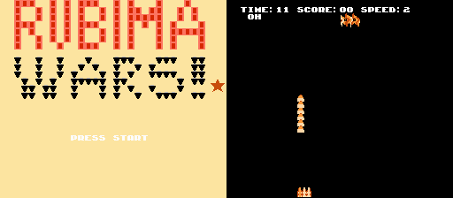

8-bit風ゲームをつくるフレームワークburnの紹介
書いた人: remore (@remore)
はじめに (TL;DR)
burn は DSL を使って .nes アプリケーションを作るためのお手軽なツールキットで、Ruby の内部 DSL の魔力に惚れた著者が初めて自作した rubygem です。
本稿では、駆け出しの Rubyist であるところの著者が burn を作るにあたって、C 言語ジェネレータや ruby2c トランスレータ開発の試みの一部を含めて悪戦苦闘した結果をつまびらかにします。
デモ

今回るびまに掲載して頂くにあたって、デモ代わりに burn で簡単なシューティングゲーム RUBIMA WARS! を作ってみました。リンクを踏むと音が鳴るので注意。Chrome か Firefox で動きますが、burn v0.1.3 現在ではスマホには対応しておらず、PC のキーボード入力のみ受け付けます。Enter キーでゲームスタートして、x キーで弾を発射します。3 面が激ムズで、著者もまだクリアできていません。
burn で動くアプリは DSL で記述します。例えば RUBIMA WARS は 500 行足らずのテキストファイル 1 ファイル でグラフィック、音楽、アルゴリズムの全てを実装しています。もし興味を持っていただけた方がいたら、github 上の README に書いてある、その他のサンプルもどきも一応動くので、気になる人は以下のコマンドでサンプルの DSL を burn してみてください (余裕のある人は example を変更して更に遊べます)。
sudo gem install burn
sudo burn init
git clone https://github.com/remore/burn.git
cd burn/example/shooting
burn -p -c # -c で Chrome が起動します。-c を外すと Firefox が起動しますburn ではこれらの DSL のことを Fuel DSL と呼んでいます。BASIC や MSX で遊んでいたあの頃や、ガラケーに着メロ作曲機能があったあの時代に体験した、シンプルなプログラミング環境を再現することを目標に DSL を作りました。
なぜ burn が必要なのか
世の中に NES エミュレータは星の数ほど開発されていますが、その割に著作権の問題をクリアしたクリーンな ROM ファイルは一部の自作ファンが作成するのみにとどまっています。LL で気軽に ROM イメージを作成できる環境があれば、.nes ファイルをめぐるエコシステムがより整備され得ると、著者はずっと考えてきました。ネットをしばらく検索してみましたが、そういう発想の人があまり居なかったのか、今日まで気軽に .nes アプリを簡単に・素早く組める環境は (少なくとも著者の観測範囲内では) 存在していないように見えました。
LL という制約条件を外せば、例えば有名な開発環境としては cc65 (C言語で記述) や nesasm (アセンブリで記述) などがありますが、それらも利用にあたってはアセンブラや 6502 CPU を始めとするハードウェアのアドレス空間等についての知識が必要で、しかも最終的に .nes ファイルにコンパイルするまでには複数の別ユーティリティを利用してアセンブリを生成していく必要があるなど、開発の敷居が大変高いものでした。
burn を使うと、ruby (>=1.9.1) と gcc が動く PC さえあれば、自作の .nes の ROM を簡単に作成できます (Windows 環境では gcc すら不要なことは特筆すべき点です)。ドット絵も FM 音源の操作も DSL で記述するため、特殊なソフトは必要がありません。DSL を記述できるお気に入りのテキストエディタさえあれば、.nes ファイルが作れるわけです1。
burn を支える技術
.nes の ROM イメージの仕様は非常にシンプルで、ROM ファイルは下記 3 つの部品で構成されています。
- ROM のヘッダ情報
- PRG (Program) ROM
- CHR (Character) ROM
これら 3 つを結合したものが .nes の ROM イメージと呼ばれています。PRG ROM にプログラムが格納してあり、CHR ROM にグラフィック関係の情報が格納されています。
burn を使うとこの ROM イメージを簡単に作成することができますが、burn ではこの ROM イメージ生成の多くを cc65 に (より正確には、gem ファイル中に内包している cc65 のソースコードに) 依存しています。cc65 は 6502 CPU のシステム向けの開発環境で、これを使うと C 言語のソースで NES 向けの処理を書くことができます。burn が担当する処理は、Fuel DSL で書かれたプログラムの情報を入力として cc65 が解釈可能な C 言語のソースコードを出力することとと、cc65/ld65 がビルドするために利用可能なグラフィックデータやサウンドデータのバイナリを生成することです。
開発に着手した頃は 6502 アーキテクチャ向けの命令セットを自前で制御したり、mruby をフォークして RiteVM を改造して 6502 をサポートさせれないかなどの野望を追いかけていた時期もありましたが、著者の実力と慎重に相談しながら実装方針を検討した結果、結局は実装が一番簡単なこの仕組みに落ち着きました。
以上の機能を提供するために利用している主な gem には、thor、archive-tar-minitar、ripper や webrick などがあります。archive-tar-minitar は cc65 のソースを始めとする、ビルドに必要な様々なファイルを gem ファイルに内包するために、ripper は C 言語のソースジェネレータ中で ruby2c もどきの動作をしている箇所がありその部分の動作に、webrick は burn play コマンドを実行した際に burn が提供する NES エミュレータの実装に利用しています。なお、エミュレータは JSNES (Firefox/Chrome で動作する javascript ベースのエミュレータ) を利用しています。
burn の C 言語ジェネレータ
本節では実際の例を通して、burn が Fuel DSL から C 言語のソースコードをどのように生成していくのかを見ていきます。例えば以下のようなシンプルな Hello world だけを表示するアプリについて考えます。

この画面は、Fuel DSL では以下のように記述します。
scene do
label "Hello, world!"
endこの Fuel を burn に渡すと、burn は内部的に以下のような C のソースコードを生成します。
#include "neslib.h"
・・・中略・・・
void main(void){
pal_col(1,0x30); //set while color
put_str(NTADR(2,2),"HELLO, WORLD!");
ppu_on_all();//enable rendering
while(1);//do nothing, infinite loop
}なんとなく main() 関数の中に “HELLO WORLD!” と表示するプログラムの処理が生成されている様子がわかります。興味のある方のために少しだけ解説を加えると、PPU (Picture Processing Unit, 画面の表示を制御します) が OFF の初期状態で NameTable に文字情報を転送して、その後 PPU の画面表示を ON にしているだけの簡単なプログラムです。簡単ではありますが、以上が画面上の静的な要素を DSL を通して表現して、C 言語のソースコード文字列に変換する流れです。
次の節では、スプライトの操作を含む、画面上の動的な要素の制御について見ていくことにしましょう。
実装した ruby2c トランスレータ
次のような動的な表現について、どのように内部的に処理されるかを見てみましょう。
この画面は、Fuel DSL では以下のように記述します。
declare do
star <<-EOH
11
11
1111
1111
1111111111111111
11111111111111
111111111111
1111111111
11111111
11111111
11111111
1111 1111
11 11
1 1
EOH
end
scene do
main_loop <<-EOH
star.x=20
star.y-=3
sprite "star"
EOH
endこの Fuel を burn に渡すと、burn は内部的に以下の処理を行います。
- declare リソースを処理して、星型のグラフィックを前述の CHR ROM に変換
- declare された星形のリソースをスプライトとしてプログラムから操作可能なように、C の宣言部を生成
- scene リソース中の main_loop メソッドを処理
このうち最後の main_loop メソッドが burn が動的な処理を記述する部分で、「ruby で書いたコードを C 言語のソースとして生成する」というトランスレータもどきの動きをする部分です。これを下記のような C のソースに変換できればゴールです。
while(1){
star.x=20;
star.y-=3;
sprite(&star);
}この変換を実現するために burn が取った方法は、Ripper が出力する S 式のツリーを C 言語風の文字列に出力する、という方法でした。今回の例で言えば、下記のような S 式のツリーを入力に取る処理の実装が必要でした。
[:program,
[[:assign,
[:field, [:vcall, [:@ident, "star", [1, 4]]], :".", [:@ident, "x", [1, 9]]],
[:@int, "20", [1, 11]]],
[:opassign,
[:field, [:vcall, [:@ident, "star", [2, 4]]], :".", [:@ident, "y", [2, 9]]],
[:@op, "-=", [2, 10]],
[:@int, "3", [2, 12]]],
[:command,
[:@ident, "sprite", [3, 4]],
[:args_add_block,
[[:string_literal,
[:string_content, [:@tstring_content, "star", [3, 12]]]]],
false]]]]再帰で処理すると都合が良さそうなツリーに見えます。burn で実装したこの変換処理の実装のサンプルをgithub に push しておいたので、興味のある方はこちらのリポジトリも参照してください。このサンプルはこんな感じで実行できます。
require 'ripper'
require './simple_transpiler'
SimpleTranspiler.ruby2c(Ripper.sexp("a=1+1")) # a=1+1;
SimpleTranspiler.ruby2c(Ripper.sexp("printf \"hogehoge\" if i==2 and j%2")) # if (i==2&&j%2){printf("hogehoge");}まだ開発の途中段階で、非常に限られた ruby の記述のみサポートしています。上記のように単純な例であれば変換できますが、to_i のような ruby の組み込みメソッドの変換やブロック構文などの基本的な文法ですら現在はサポートしていません。
この ruby2c の処理は、本当は自前で実装なんてせずに rubygem から使える gem を持ってこれたら良かったのですが、今回の目的に合う ruby2c トランスレータが見つからなかったため、結局自作したという経緯があります2。
音楽やサウンドエフェクトも DSL で記述
Fuel DSL では以下のような形式で音楽も表現することができます。
scene do
label "Hello, World!"
play "openning"
end
music "openning" do
tempo :allegro
channel "piano" do
segno
g :dotted
g :eighth, :staccato
a :dotted
a :eighth, :staccato
dal_segno
end
endこの Fuel DSL を burn すると、アレグロのテンポで、piano の音でソの音2つとラの音2つで構成される1小節の演奏がループする音楽が再生されます。これを burn に渡すと、burn は music リソースを入力として受け取り、PRG ROM へと変換処理を行います。音楽演奏のためのバイトコード生成処理の多くは famitone ライブラリに依存しています。
これとは別に、burnはサウンドエフェクト（効果音）の生成も表現することが可能ですので、興味のある方はリンク先をご覧ください。なお、本稿執筆時点では DPCM の再生には対応していません。
まとめ

「メタプログラミング Ruby」や Yugui さんのブログにお世話になった話とか、他にも書きたいことはたくさんあるのですが、書きすぎると本当に書きたいことが埋もれてしまうのでこの辺りで筆を置きます。
burn は大変幸運なことに、reddit で v0.1.3 のリリースをアナウンスしたところホットエントリに入ったことがあり、海外の人に興味を持ってもらうことができました。逆に日本語での情報発信が全く出来ておらず、このるびま記事が日本語で書かれた初めての紹介ドキュメントです。なんて幸運な恵まれた gem でしょう。執筆の機会を頂いたるびま編集部の皆様に心から感謝します。
burn は向こう 10 年とか 20 年とかのスパンで、長くゆっくりメンテナンスするつもりで開発を進めます。本稿執筆時点では .nes の ROM ファイル出力のみをサポートしていますが、将来的には CreateJS を使った Canvas アプリを出力したり、機能拡張して簡単なカーネルを作れるようになったりしても楽しそうかなと目論んでいます。特に誰も期待していないとは思いますが、burn の今後の開発にご期待ください。
著者について
さわだけい(@remore) は物好き以上オタク未満のプログラマ。週末のコントラバスの練習時間が心のオアシス。